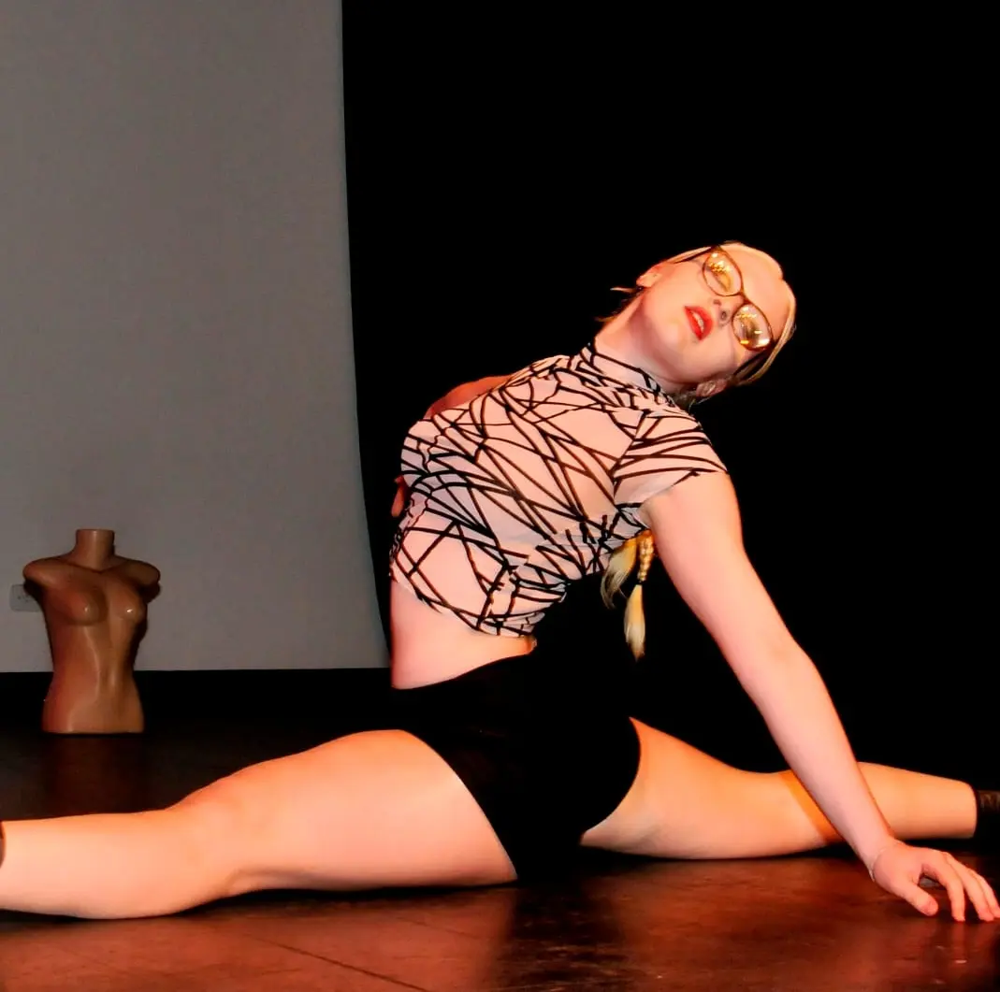

Álbum de Fotos

.webp)

Olá, eu me chamo Carolina Montagner Jaouiche e criei esse site para compartilhar um pouco da minha paixão pela dança e como ela impactou na minha vida.
Comecei a dançar com 3 anos de idade e desde então sou completamente apaixonada por tudo que envolve esta arte. Já explorei alguns esilos mas os mais presentes em minha vida são jazz, ballet, hip hop e chair dance. Minha mãe era dançarina na sua fase de jovem adulta e me ensinou o quão transformadora a dança pode ser na vida de alguém.
Eu infelizmente passei por uma depressão profunda devido a acontecimentos duros da minha infância como bullying e abusos sexuais. Foram quatro longos anos lidando com essa angústia, dos 12 aos 16, odiando meu corpo e tudo que envolvesse ele. Depois que a pandemia passou, eu pude voltar para a dança, ainda lidando com a depressão mas tendo a dança como fuga. Com o tempo fui ressignificando os acontecimentos em minha vida e me apoiando neles para me reerguer. Com a dança pude me conectar com meu corpo e minha alma da forma mais profunda possível, expondo minha dor sem usar uma palavra sequer. Disso surgiu minha ideia juntamente com minha professora de jazz de fazer um solo baseado em um poema que eu havia escrito sobre todo aquele momento difícil já citado anteriormente. A dança para mim é sinônimo de saúde, bem-estar, liberdade, fuga e força.